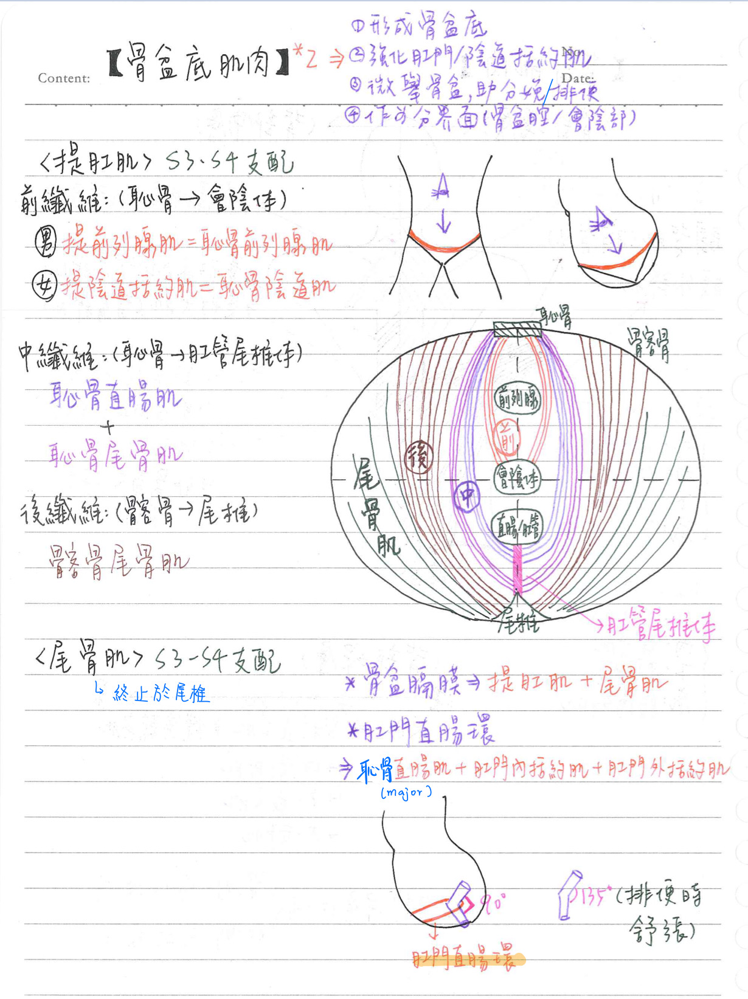

💪🏼 肌肉系統：骨盆底肌肉
骨盆底肌肉 [終止點要背]
- 骨盆底(pelvic floor)=骨盆膈膜(pelvic diaphragm)]；★成漏斗狀
- 肌肉組成：★★★提肛肌+尾骨肌
- 提肛肌(levator ani)
- 神經支配：薦神經(S3~4)、陰部N(下直腸N+ 會陰N)
- 前方具U形之泌尿生殖裂孔(urogenital hiatus, 就是有泌尿跟陰道通過的空腔)
- 前纖維
- 男： ★★提前列腺肌(levator prostatal) [=恥骨前列腺肌(puboprostaticus)]
- 女：提陰道括約肌(sphincter vaginal levator)[=恥骨陰道肌(pubovaginalis)]
- ★終止於會陰體 (perineal body)
- 中纖維(最重要)= 恥骨直腸肌(puborectalis)+★恥骨尾骨肌(pubococcygeus)
- 終止於★肛管尾椎體 (anococcygeal body)
- ★★恥骨直腸肌平時收缩使肛管直腸角呈 90 度(使糞便不會直接掉入肛門)；★排便時舒張使其呈 135 度
- 肛管直腸環(anorectal ring)=恥骨直腸肌(主要)+肛門內括約肌+肛門外括約肌(深層部)
- 後纖維=髂骨尾骨肌(ileococcygeus)
- 終止於尾椎(coccyx)
- 尾骨肌(coccygeus)
- 神經支配：薦神經 (S3~4)
- 終止於尾椎(coccyx)
- ★不會因分娩而造成撕裂傷
- 骨盆底肌肉的作用
- ★形成骨盆底(=骨盆橫膈)，支持骨盆腔內臟
- 強化肛門括約肌及陰道括約肌之功能，避免失禁
- 作為分界面：其上為骨盆腔,其下為會陰(perineum)
- 骨盆微向上：協助排便功能
骨盆筋膜(pelvic fascia)
- 壁層(parietal division) = 骨盆壁肌肉筋膜(fascial sheath)
- 骨盆膈膜(pelvic diaphragm)之上層筋膜及下層筋膜
- 閉孔內肌(obturator internus)之筋膜
- 梨狀肌(piriformis)之筋膜
- 臟層(visceral division) = 骨盆腔器官覆膜(endopelvic fascia)
- 前方= 膀胱層(vesical layer)：形成膀胱前韌帶與側韌帶
- 中間= (男)直腸腸儲精囊隔膜(rectovesical septum)
(女)子宮頸橫韌帶(transverse cervical ligament) - 後方= 直腸層(rectal layer)

📖 書本補充：與筆記不同或筆記沒寫到的地方
⚠️
以下為對照書本後整理，筆記原文未更動。標「筆記 vs 書」的是兩邊寫法不同、建議回頭確認的地方。
骨盆壁和底部（p.280–281）
- 書把骨盆腔的肌肉分成三個位置：
- 外側壁＝閉孔內肌：經坐骨小孔離開骨盆；其筋膜增厚成肌腱弓（tendinous arch），是提肛肌的附著處；閉孔筋膜的下部特化成陰部管（pudendal canal）。
- 後外側壁＝梨狀肌：經坐骨大孔離開骨盆。
- 底部＝骨盆橫膈：尾骨肌＋提肛肌。
- 尾骨肌貼在薦棘韌帶表面。
- 提肛肌大部分起自閉孔內肌的肌腱弓（筆記沒寫起點）。
- 提肛肌三部分（書的說法）：
- 髂骨尾骨肌＝提肛肌的後外側部。
- 恥骨直腸肌＝繞到肛門直腸交界形成 U 形吊帶以控制排便。
- 恥骨尾骨肌＝在肛門和尾椎之間形成肛門尾骨體（韌帶）。
- 筆記 vs 書：筆記把恥骨直腸肌＋恥骨尾骨肌合稱「中纖維」，寫成兩者都終止於肛門尾骨體；書上只說恥骨尾骨肌形成肛門尾骨體，恥骨直腸肌則是繞過肛門直腸交界的 U 形吊帶。
- 書的提示：骨盆橫膈＝尾骨肌＋提肛肌；骨盆橫膈以下就是會陰。閉孔內肌、梨狀肌、會陰深橫肌、尿道外括約肌都不屬於骨盆橫膈（考題常拿來當錯誤選項）。
- 分娩撕裂：陰道開口在泌尿生殖三角，所以分娩容易傷到髂骨尾骨肌、恥骨尾骨肌、會陰淺橫肌；尾骨肌位於肛門三角上方，最不可能受傷（與筆記「尾骨肌不會因分娩撕裂」一致）。
- 提肛肌無力 → 支撐泌尿生殖三角不足 → 咳嗽時漏尿（101-2-27）。
- 筆記 vs 書：筆記作用第 4 點寫「骨盆（底）微向上：協助排便」；書（106-2-27 解析）強調排便時恥骨直腸肌要鬆弛，使肛門直腸曲角度變大以利排便，因此「排便時骨盆橫膈收縮幫助排出糞便」被判為錯誤敘述。兩者不完全衝突，但考試請以「排便時放鬆」作答。
肛門括約肌（p.306）
- 肛門直腸曲（anorectal flexure）由恥骨直腸肌構成（不是尾骨肌）。
- 肛門內括約肌：不隨意（平滑肌），由腸壁內環肌特化而來；包圍肛管上 2/3；交感和副交感支配。
- 肛門外括約肌：隨意（骨骼肌），分皮下、淺層、深層部；包圍肛管下 1/3；主要由 S4（經直腸下神經）支配。
- 記憶法：內括約肌是內環肌特化 → 平滑肌 → 自主神經；外括約肌可想成提肛肌往下的延伸 → 骨骼肌 → 體壁神經。
📝 書中歷屆考題（點選答案作答）
100-2-14p.281
下列何者為骨盆橫膈的一部分？
105-1-18p.281
下列何者是骨盆橫膈 (pelvic diaphragm) 的一部分？
101-2-27p.281
下列何者的力量不足，最可能造成咳嗽時漏尿之現象？
💡 提肛肌是尿道穿過之處（泌尿生殖三角），無力支撐時易在咳嗽時漏尿。
106-2-27p.282
有關骨盆橫膈 (pelvic diaphragm) 的敘述，下列何者錯誤？
💡 排便時恥骨直腸肌要鬆弛，讓肛門直腸曲角度變大以利排便。
102-1-23p.282
分娩易造成骨盆底部的撕裂傷，下列何者最不可能受傷？
💡 陰道開口在泌尿生殖三角，A、B、C 易受傷；尾骨肌位在肛門三角上方。
104-2-18p.282
下列何者形成肛門直腸屈曲 (anorectal flexure) 且有助於排便控制 (fecal continence)？
109-1-27p.282
肛直腸彎曲 (anorectal flexure) 之角度，主要由下列何者所牽引形成？
111-1-23p.308
關於直腸 (rectum)，下列敘述何者正確？
💡 直腸內仍有橫向皺褶；肛管直腸彎曲是由恥骨直腸肌造成，不是尾骨肌。